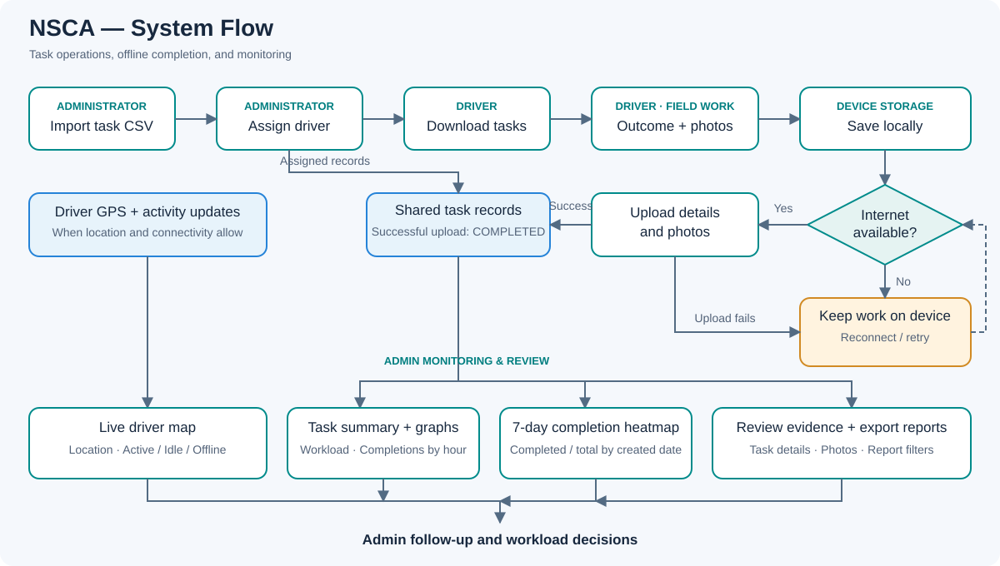
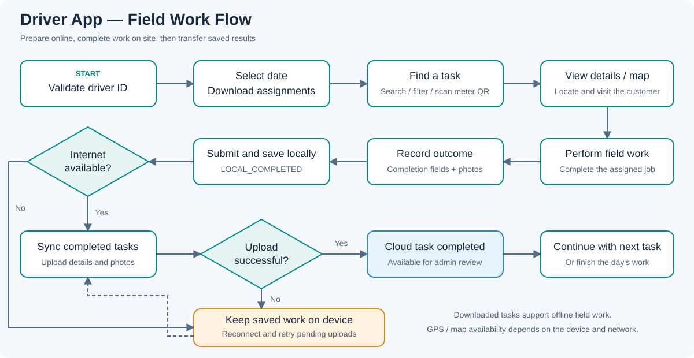
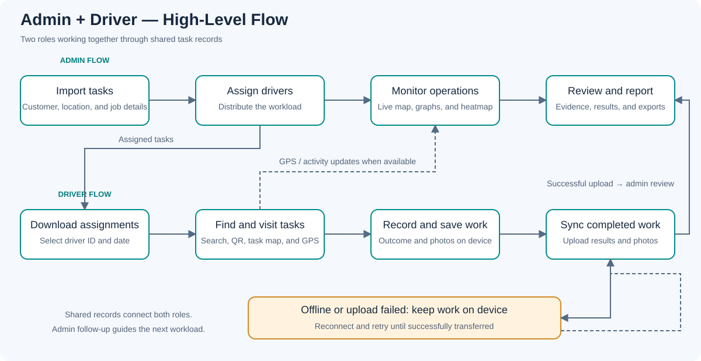
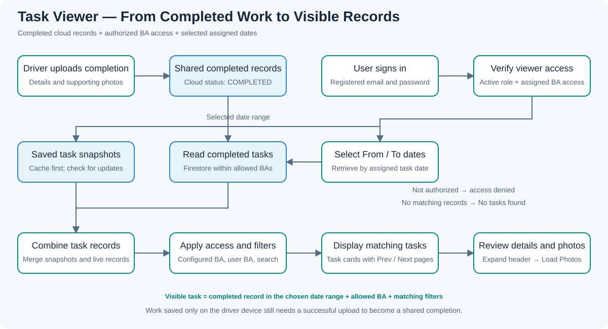

Import tasks
Upload a CSV containing customer, location, and job details.
A shared workflow for administrators and drivers, with local storage supporting field work when internet access is unavailable.
Upload a CSV containing customer, location, and job details.
Select tasks and assign them to the responsible driver.
Load assigned work onto the device for use in the field.
View task details and maps, record the outcome, and capture supporting photos.
Transfer locally completed task data and photos when connected.
Review task progress and evidence, then export task reports.
1 / 11 · Main operational workflow
The cloud holds shared task records. The driver device holds downloaded work and completed items awaiting upload.
2 / 11 · Task records: Firestore · Photos: Firebase Storage · Driver location updates: Realtime Database · Local work: IndexedDB
After downloading tasks, the driver records completed work on the device. A local completion becomes a shared cloud completion after a successful upload.
Transfer task details and photos. Successful transfer marks the shared task completed, making it available for admin review and reporting.
Retain the local completion. Restore connectivity and retry the upload. Recovery tools can restore saved completion backups if needed.
Presentation status flow: Assigned / pending → Downloaded → Completed locally → Uploaded / completed
The driver stores unsent completion as LOCAL_COMPLETED; successful cloud completion uses COMPLETED. A task saved only on the device still needs transfer before it appears as completed in shared reports.
3 / 11 · Offline handling and successful transfer
Three dashboard views help administrators locate drivers, compare outstanding work, and track completion across days.
View reported GPS locations and driver activity. Select a driver to inspect their location and open tasks.
Activity reflects the latest driver update; location refreshes depend on GPS and connectivity.
Compare each driver's For Download, Pending, and Completed counts using the summary table and stacked workload bars.
Blue: For Download · Amber: Pending · Green: Completed
A second graph shows completed tasks by hour in Philippine time. BA and job-type filters narrow the view.
View a seven-day grid by driver and task-created date. Each cell shows completed tasks ÷ total tasks as a percentage.
Gray: No tasks · Red: <50% · Amber: 50–79% · Light green: 80–99% · Green: 100%
Browse previous periods and refresh to review recent progress.
4 / 11 · Visual examples are illustrative. Summary graphs use cached task data; sync for changes. Heatmap ends yesterday, using older report snapshots and a live check for yesterday.

5 / 11 · Follow the arrows for task operations; the lower branches show monitoring and review. Open full-size flowchart
Drivers can find their assignments, record work on site, and transfer completed results back to the administrator.
Use a validated driver ID, select a date, and download assigned tasks. Task counters show available work.
Search task records, filter by date and job type, or scan a QR code to find the matching task.
View tasks on a map, explore task clusters, and center on My Location. GPS activity updates support admin monitoring when connected.
Open customer and job details, fill in the configured completion fields, and capture supporting photos before submitting.
Use previously downloaded tasks and save completion data and photos locally. The offline indicator shows connectivity status.
Sync completed tasks, see upload progress and success/failure counts, and retry pending uploads. Completion backup files support recovery.
6 / 11 · Download before going offline. Map tiles, QR scanning, and GPS depend on network availability, browser support, and device permissions as applicable.

7 / 11 · Follow the arrows across the top, back through field completion, then down to sync. Open full-size driver flowchart

8 / 11 · Each lane summarizes one role. Arrows between lanes show task assignment, driver activity, and completed results. Open full-size high-level flowchart
Use Task Viewer to check customer details, recorded outcomes, completion times, and photo evidence within your assigned BA access.
Open login-taskview.html, enter your registered email and password, and click Login. Your account must be active and authorized for Task Viewer.
Choose the date range for the assigned tasks you want to review. Wait for the loading indicator while records are retrieved.
Type a customer name, meter number, account number, or driver ID in Search. Select BA filters to narrow the available results.
Click a customer task header to expand the record. Review the driver, completion time, customer details, and configured result fields.
Load the uploaded photos for the expanded task. If none are available, the button shows No photos. Click the header again to collapse details.
Use Prev and Next to review additional results. If no tasks appear, check dates, search, and BA filters. Click Logout when finished.
9 / 11 · Results are limited to configured BA access. Date selection retrieves tasks by assigned date; the displayed completion time may differ. The Config button is available to Task Viewer admins.

10 / 11 · Tasks are shown within the user's configured BA access and selected assigned dates. Open full-size Task Viewer flowchart
Task Viewer combines saved records with current database checks, then displays completed work within each user's authorized BA access.
After sign-in, the system checks the account's active Task Viewer role and assigned BAs. Unauthorized accounts are redirected to login.
For the selected dates, cached snapshots can appear first. The system checks published snapshots for changes and refreshes the saved copies.
The database query retrieves completed tasks by assigned date and allowed configured BAs. Work saved only on a driver device needs upload first.
Records are merged by task ID, with live records replacing matching snapshots. BA access, selected BA filters, and search determine what is displayed.
Matching records appear as paginated task cards. Expanding a card shows customer details, the assigned driver, completion time, and result fields.
Load Photos retrieves images from recorded photo links when requested. Click a thumbnail to open the full image. Task details are read-only.
11 / 11 · The loading indicator shows the background check. Cached records may appear before it finishes; a database read failure can leave saved snapshot records available.